Derivatives¶
Derivatives are one of my favorite things in math. At first they seem like calculating their values will be quite complicated, but it turns out to be surprisingly easy.
Derivatives are also not useless gibberish isolated from real life. There's a practical demonstration game at the end of the chapter, and we can use them in surprisingly many places like implementing our own sin function. If you have no idea what sin is that's not a problem, and you don't need it for learning derivatives.
This chapter starts with some boring stuff, but we need it for fun stuff. Try to read patiently.
Limits¶
Things like 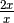 seem to be  with any
with any  . But there's one
exception: if
. But there's one
exception: if  , then is and thus not
defined.
, then is and thus not
defined.
>>> 2*123/123
2.0
>>> 2*0/0
Traceback (most recent call last):
File "<stdin>", line 1, in <module>
ZeroDivisionError: division by zero
>>> 2*0.00000001/0.00000001
2.0
>>> 2*(-0.00000001)/(-0.00000001)
2.0
No matter how near zero is we get 2, even if is negative. In
these cases, mathematicians say that
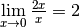. Here lim means
that we take the limit as goes to 0. We get if we try
to do 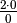, but the limit still exists.
The limit does not exist if we get something like or as opposed to . See this video for a really nice example that also shows why.
We can also do things like this:
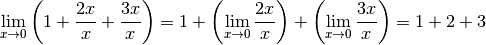
I won't list all the things we can do to limits and why because the rules are quite straight-forward and the why part is boring.
Slopes¶
A difference means how much a value changes. For example, if the value of
is first 5 and then we change it to 6, changes by . Here
 is the Greek delta letter, so if someone's code has a variable named
is the Greek delta letter, so if someone's code has a variable named
deltax it means this.
Let's draw a graph of something like 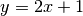:
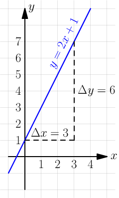
For example, at  we know that 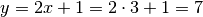.
we know that 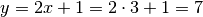.
Let's calculate the slope of this line:
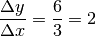
The bigger the slope, the faster the line goes up, so the slope describes the "growing speed" or "changing speed". I used the 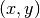 points 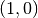 and 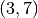 when calculating the slope, but you should get the same slope with any pair of points chosen from the line because the height grows at the same speed everywhere.
What is a derivative?¶

What if we could extend this slope thing to curvy graphs? At first sight it might seem like we won't get a useful growing speed out of this because we get different slopes depending on which points we choose as shown in the image at right.
But what if we try to get the growing speed at some specific point, like
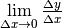
instead of a plain  ? Let's see what we get
from a
? Let's see what we get
from a  graph where
graph where  is a function:
is a function:
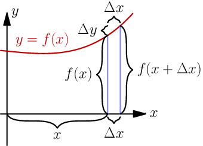
Based on the image, if we take the length of the vertical 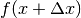
line and take off the length of the  line, we're left with just
line, we're left with just
 . So 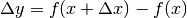:
. So 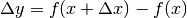:
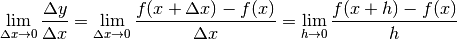
I finished by replacing  with
with  because is easier and
faster to write than .
because is easier and
faster to write than .
This "growing speed at x" value is known as the derivative of .
Sometimes the derivative doesn't exist, but most functions you'll come
across have the derivative. Click
here if you want to
know more.
At this point you're probably feeling like this is just some theorethical gibberish that has nothing to do with real life, but that's not the case. Keep reading.
The graph 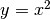 is a parabola.
Let's find the derivative of  by plugging in 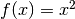 to the lim
thing we ended up with:
by plugging in 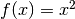 to the lim
thing we ended up with:
Handy thing: 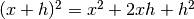
Proof:

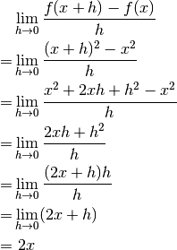

I think this is cool. We started with a complicated-looking thing but finally we arrived at just . What's more, the is not just a random value we got out of a spooky calculation; for example, at 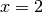 the derivative is 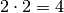, so if we draw a straight line that barely touches at its slope will also be 4 like in the image at right.
You can also find the derivative of the example we looked at earlier, and turns out that it's 2, just like the slope was. This makes sense because derivatives are like slopes but they also work with curvy things, and there's no difference between a slope and a derivative of a straight line.
The derivative
is often written as 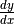. Historically 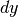 and  were
infinitely tiny changes of
were
infinitely tiny changes of  and , but nowadays limits are
preferred over "infinitely small numbers".
and , but nowadays limits are
preferred over "infinitely small numbers".
It's also common to write 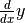 instead of ,
although it doesn't make much sense because doesn't mean  times .
Another common style is to put a single quote after a function name, like
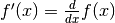.
times .
Another common style is to put a single quote after a function name, like
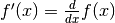.
Sometimes programmers write dy when they really mean deltay.
It doesn't really make sense either, but dy is much less typing
than deltay.
Faster!¶
Let's say that you want to calculate something like this:

That would be a horribly complicated calculation with the  thing.
Let's be a bit more clever.
thing.
Let's be a bit more clever.
We have a bunch of things with  and
and  in between, so maybe we could
deal with them somehow? Let's say that we want to find the derivative of
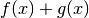 where and
in between, so maybe we could
deal with them somehow? Let's say that we want to find the derivative of
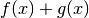 where and  can be any functions (as long as the
derivative exists). They could be for example 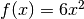 and
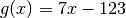, but let's see what we get if we don't plug in any values:
can be any functions (as long as the
derivative exists). They could be for example 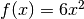 and
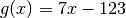, but let's see what we get if we don't plug in any values:
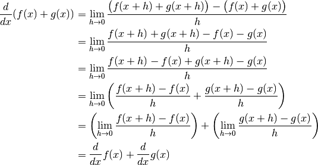
That's quite nice! So if we want to find the derivative of a bunch of
things added together we can just find derivatives of each thing one by
one. The same thing also works with instead of ·
We can actually take a step further and find the derivative of 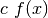
where  is any constant, e.g. :
is any constant, e.g. :
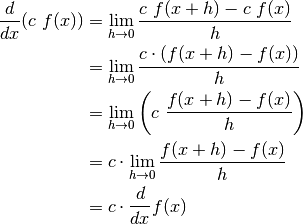
We need a couple more things:  because
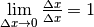, and
because
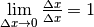, and
 because never changes regardless of the value of
and . You can also use the definition of derivative to show that
these work.
because never changes regardless of the value of
and . You can also use the definition of derivative to show that
these work.
So, with all that we can calculate the derivative easily:
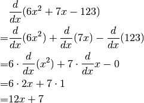
See Also
The summary page has a derivative section with many more rules. You may need them if you want to find derivatives of different functions than the functions in this chapter.
You can also use a nice symbolic calculation library, like Python's sympy (can be installed with pip):
>>> from sympy import *
>>> init_printing()
>>> x = Symbol('x')
>>> diff(x**2, x)
2⋅x
>>> diff(6 * x**2 + 7*x - 123, x)
12⋅x + 7
Here "diff" is short for "differenciate", and it means finding a derivative.
Libraries like sympy are also useful for doing long and messy calculations like the one we did above:
>>> def f(x):
... return x**2
...
>>> h = Symbol('h')
>>> (f(x+h)-f(x))/h
2 2
- x + (h + x)
───────────────
h
>>> simplify((f(x+h)-f(x))/h)
h + 2⋅x
Example: Smooth Jumps¶
Let's say you're making a game where a player can jump over something. If the player moves right at a steady speed, which of these jumps looks best?
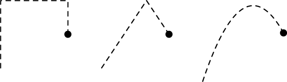
The answer is obvious – the rightmost jump looks best. It's time to figure out how to make games with jumps like that.
Let's say that  is time and is the height of our player, so we get this
graph:
is time and is the height of our player, so we get this
graph:
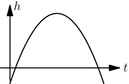
This graph looks like a parabola, so its equation is
where  ,
,  and are constants. The
changing speed of height is the falling speed. Let's call that
and are constants. The
changing speed of height is the falling speed. Let's call that  like
velocity.
like
velocity.
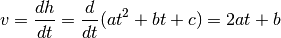
On the other hand, the changing speed of velocity is the acceleration caused by
gravity. Let's call that .
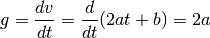
Note how the disappeared and we're left with just the constant  . This
makes sense because the gravity is always the same, no matter what time it is.
. This
makes sense because the gravity is always the same, no matter what time it is.
This Python program...
height = 0
velocity = 10
gravity = 2
while height >= 0:
print(' '*height + 'O')
height += velocity
velocity -= gravity
...prints this awesome parabola:
O
O
O
O
O
O
O
O
O
O
O
O
You can use similar code for doing jumps in games. Here's a demo created with my canvaswrapper.js script. Click it and use arrow keys to move the ball.
Here's the code:
var screen = new CanvasWrapper('canvas1');
const GRAVITY = 1.5;
var ball = {
x: screen.width/2, // centered
height: 0, // distance from bottom of screen to ball's bottom
velocity: 0, // positive means up
velocityMax: 30, // velocity immediately after a jump
sidewayMovement: 0, // -1 is left, +1 right
sidewaySpeed: 10,
radius: 30,
};
runRepeatedly(function() {
screen.fill('black');
screen.drawCircle(ball.x, screen.height-ball.height-ball.radius,
ball.radius, 'white');
ball.x += ball.sidewayMovement * ball.sidewaySpeed;
ball.height += ball.velocity;
ball.velocity -= GRAVITY;
if (ball.height < 0) {
// ball hits the ground
ball.height = 0;
ball.velocity = 0;
}
screen.getEvents().forEach(evt => {
if (evt.type == 'keydown') {
if (evt.key == 'ArrowLeft') {
ball.sidewayMovement = -1;
} else if (evt.key == 'ArrowRight') {
ball.sidewayMovement = 1;
} else if (evt.key == 'ArrowUp') {
ball.velocity = ball.velocityMax;
}
} else if (evt.type == 'keyup' && (
(evt.key == 'ArrowLeft' && ball.sidewayMovement == -1) ||
(evt.key == 'ArrowRight' && ball.sidewayMovement == 1))) {
// cancel the previous ArrowLeft or ArrowRight press
ball.sidewayMovement = 0;
}
});
});